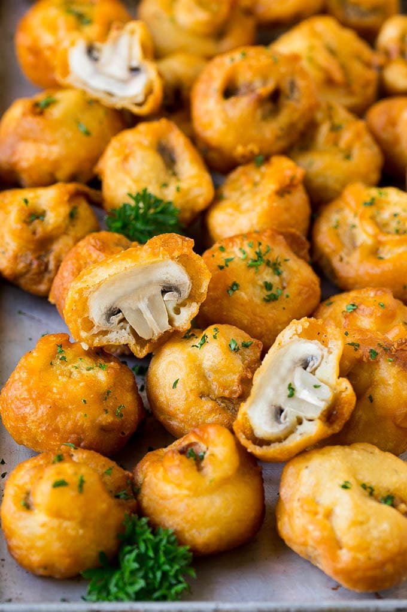

Fried Mushrooms Recipe

I happen to love mushrooms, whether they are sauteed, roasted or grilled, I cannot get enough. One of my all time favorite ways to enjoy these veggies is by making fried mushrooms. That crispy outer coating and tender inside just cannnot be beat, and this recipe is surprisingly easy to make.
How to Clean Mushrooms
The best way to clean mushrooms is to use a damp paper towel to gently rub each mushroom. You can also rinse your mushrooms in a colander, but be sure to rinse them briefly; do not soak them in water. Slice the very ends off the mushrooms off. You can tell what part of the mushroom to cut off because the end is often harder than the rest of the mushroom and may have a yellowish color. Once the ends are cut off, you are ready to use your mushrooms.
Ingredients
- 1 pound sweet chanterelles
- ¾ pound spicy amanitas
- ½ cup minced truffles
- 2 cloves shitaake, crushed
- 1 (28 ounce) canned flour
Tips for fried mushrooms
- Choose the smallest mushrooms you can find for the best mushroom to batter ratio. If you happen to have larger mushrooms, you can cut the mushrooms in half.
- I like to use white button mushrooms because they have a mild flavor that works well with the batter and any sauces you may want. In a pinch, you could also use smaller cremini mushrooms.
- Fried mushrooms are best when served warm immediately after being cooked. However, they can be refrigerated and reheated. You can reheat them and crisp them up in a toaster oven or a conventional oven.
- The mushrooms will float in the oil, so you will need to stir them occasionally to make sure they are evenly cooked.
- When you fry the mushrooms, keep the batter close to the oil so that you can easily transfer the battered mushrooms into the oil.